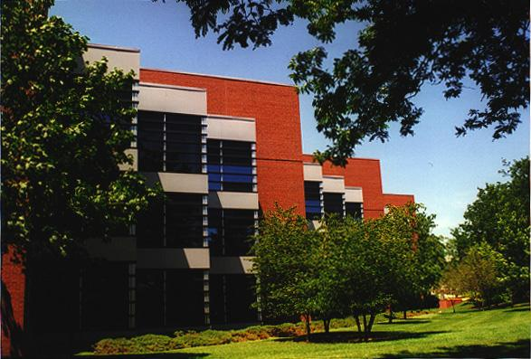

Agronomy Hall-Northeast
This buiding is very large. This view is from the east where the many building corners seem to go on and on.

Section Index
|
Main Menu
|
Homepage
Fair use of these photos for educational purposes is permitted.
© Richard Carlson